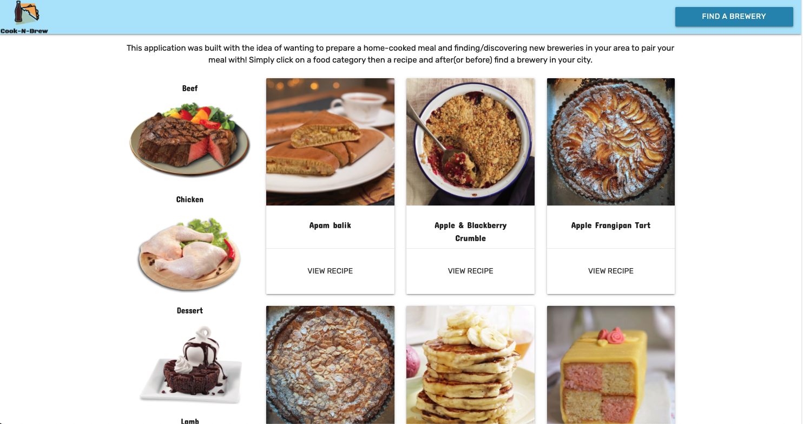
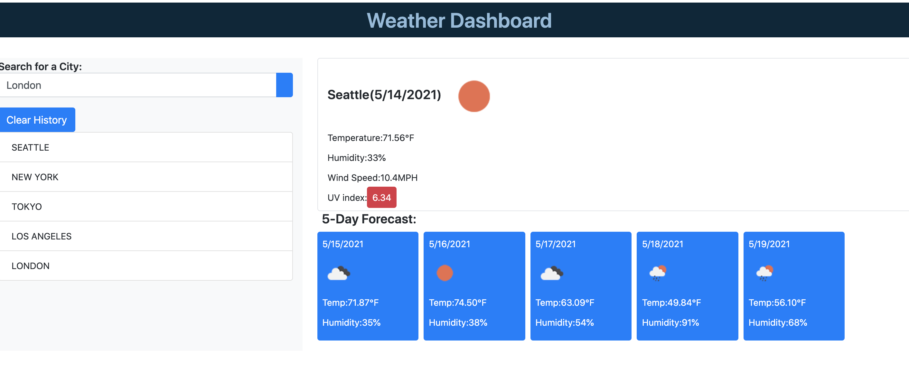
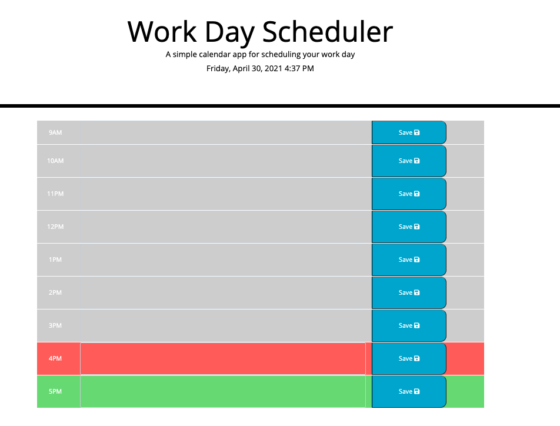
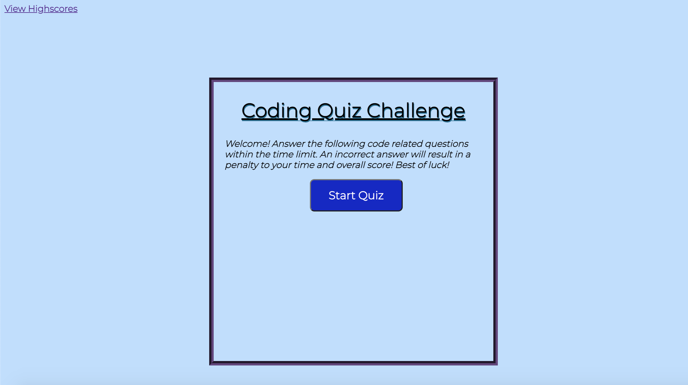
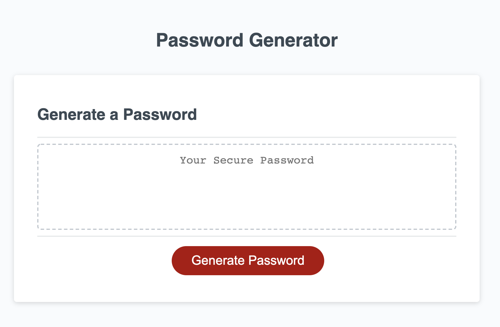

- Cook 'N' Brew:

Description: Cook 'N' Brew is an app built collaboratively with some of my fellow coders. The concept of the app is to allow users to prepare home-cooked meals by selecting a specific food category,
then find/discover local breweries to pair with your meal! Check out the Github repo here for more details.
Or click the image to try out the app for yourself!
- Weather Dashboard:

Description: This was a project I built utilizing HTML, CSS (Bootstrap), JavaScript, jQuery, and the OpenWeather API to provide the user a 5-day forecast. Based on the user
input for city, the current temperature, humidity, wind speed, and UV index populates. The app also uses localStorage to recall the previous searched cities until the user
clicks the "Clear History" button. Check out the deployed link by clicking the image or the Github repo here for more details.
- Work Day Planner:

Description: The work day planner was built to help the user better organize their busy work day. The app allows the user to input an appointment or meeting
for each hour of the day and saves the input locally. I utilized HTML, CSS, JavaScript, jQuery, and moment.js to make it all come together.
Check out the deployed link by clicking the image or the Github repo here for more details.
- Code Quiz Challenge:

Description: The Code Quiz Challenge was built with the concept of testing the knowledge of any fellow or aspiring programmer. It is a timed multiple choice quiz
that deducts points for every wrong answer. If the user completes the quiz, they are asked to enter their initials and the high score is saved locally to reference later.
I utilized HTML, CSS, and mainly JavaScript/DOM manipulation to display all the questions and high scores. Check out the deployed link by clicking the image or the Github repo
here for more details.
- Random Password Generator:

Description: Ever get tired of making up your own password? Need something secure and unpredictable? The random password generator will give you a secure
password that is never the same twice. A series of prompts will pop up asking the user for a specified password length, uppercase/lowercase characters, and special characters.
Based on what the user inputs, a random password generates inside the box after the prompts are validated. This password can then be copied and used accordingly wherever the user sees fit.
Check out the deployed link by clicking the image or the Github repo
here for more details.